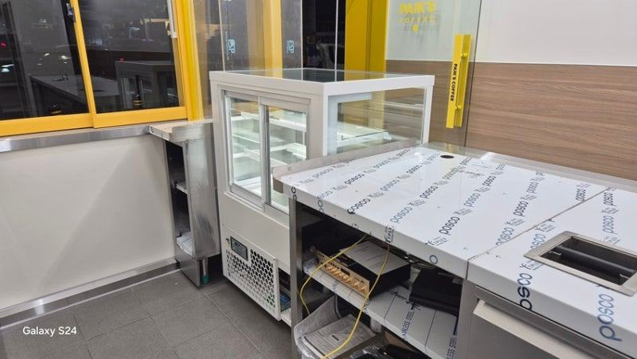
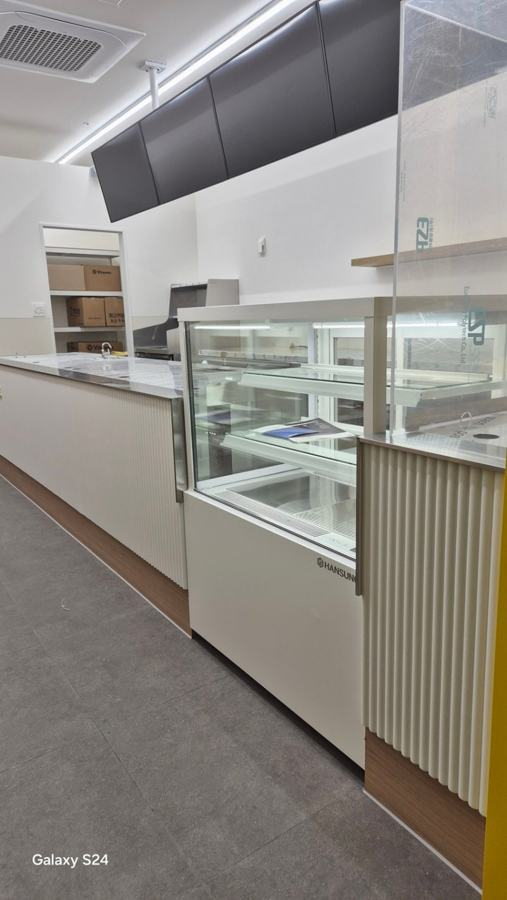
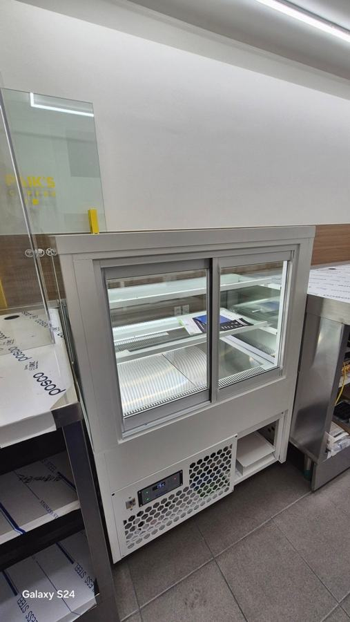
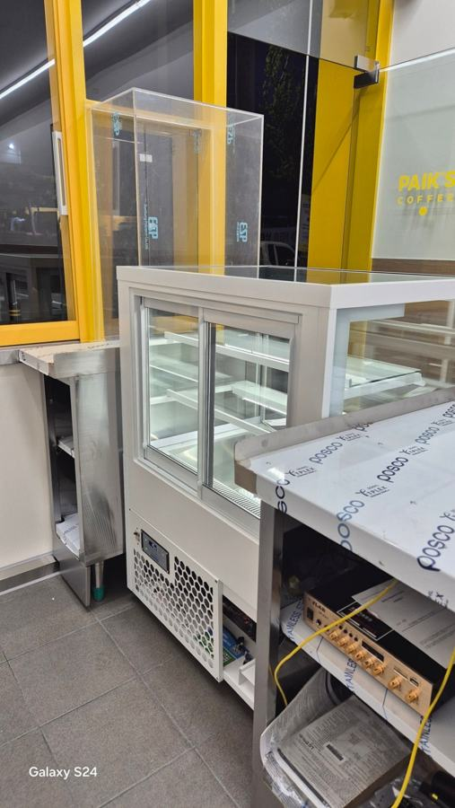
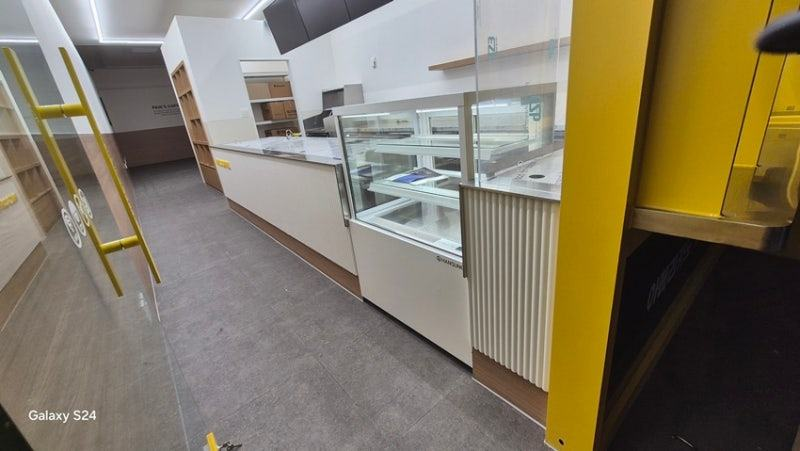
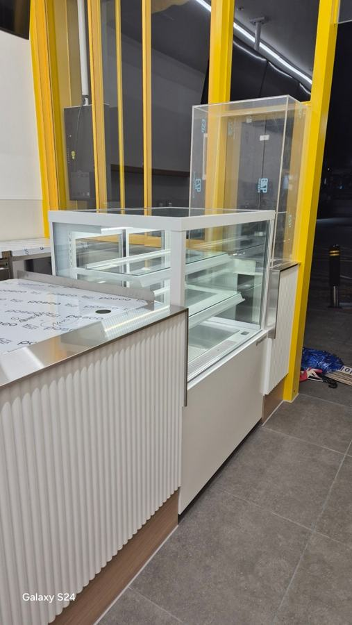
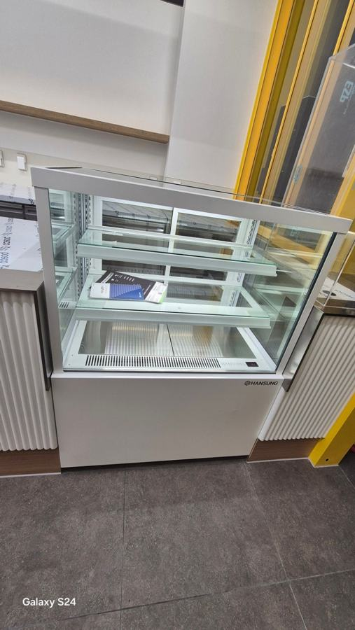

쇼케이스 이용 및 관리
맞춤제작쇼케이스 기성품쇼케이스 차이, 언제 무엇이 맞나

매장 폭이 표준 규격과 맞고 진열 상품이 일반적이며 빨리 들여야 한다면 기성품이, 벽 폭이나 기둥이 애매하거나 인테리어·조명·단 구성을 매장에 맞춰야 한다면 맞춤제작이 맞습니다. 어느 쪽이든 판매 후 A/S를 누가 직접 책임지는지는 반드시 같이 확인하셔야 합니다.
안녕하세요. 카페, 베이커리, 꽃집까지 업종별 쇼케이스를 직접 설계·제작하는 한성쇼케이스입니다.
쇼케이스를 알아보시다 보면 "그냥 나와 있는 걸 사면 되지, 굳이 맞춤으로 해야 하나요?"라는 생각이 드실 겁니다.
맞춤이라고 하면 비싸고 오래 걸릴 것 같은 느낌도 있고요.
실제로 기성품이 더 잘 맞는 매장도 있습니다. 반대로 기성품을 넣었다가 남는 공간, 막힌 동선, 어색한 인테리어 때문에 후회하시는 경우도 자주 봅니다.
오늘은 두 방식이 실제로 어디서 다른지, 우리 매장에는 무엇이 맞는지 판단하는 기준을 정리해 드리겠습니다.
1. 크기와 형태: 공간에 맞추느냐, 공간을 맞추느냐
기성품은 정해진 몇 가지 규격 안에서 고르기 때문에 매장 벽 폭과 딱 맞지 않으면 양옆에 애매한 틈이 남거나, 한 단계 작은 제품을 골라 진열량을 손해 보게 됩니다.
기둥이나 벽 단차가 있는 매장이라면 더 그렇습니다.
맞춤제작은 실측 치수에 맞춰 가로·세로·높이를 정하고, 카운터와 이어지는 매립형이나 곡선 앞유리처럼 형태도 바꿀 수 있습니다.
공간에 쇼케이스를 맞추는 방식이라 버려지는 면적이 줄어듭니다.
- 설치 자리 폭이 표준 규격과 맞는지 재 보세요.
- 기둥·단차·창문 위치를 도면에 표시해 보세요.
2. 진열 상품에 맞춘 내부 구성
기성품은 많은 매장이 무난하게 쓰도록 만들어져 단 높이와 선반 깊이가 정해져 있습니다. 홀케이크와 조각케이크를 함께 두는 카페, 키 큰 꽃을 세워야 하는 꽃집, 병음료와 디저트를 함께 놓는 매장이라면 정해진 단 높이가 잘 맞지 않을 수 있습니다.
맞춤제작은 진열할 상품 크기에 맞춰 단 수와 간격, 조명 위치와 색, 결로 대책까지 정할 수 있습니다.
디저트별로 맞는 온도 구간을 나누거나 LED 조명 각도를 상품 높이에 맞추는 것도 설계 단계에서 가능한 일입니다.
진열 상품 구성이 계절마다 바뀌는 매장이라면 선반 높이를 조절할 수 있게 만들어 두는 것도 방법입니다.
맞춤 제작 때 이런 운영 계획까지 이야기해 주시면 오래 쓰기 편한 구성으로 잡을 수 있습니다.


3. 디자인과 브랜드 통일감
프랜차이즈나 콘셉트가 분명한 매장은 쇼케이스 색과 마감이 인테리어와 따로 놀면 전체 인상이 흐려집니다.
기성품은 색상 선택지가 몇 가지로 제한되는 경우가 많습니다.
맞춤제작은 프레임 색, 상판 소재, 로고 각인, 조명 색을 매장에 맞춰 정할 수 있습니다. 쇼케이스 앞에서 사진을 찍는 손님이 많은 디저트 카페나 꽃집이라면 이 차이가 더 크게 느껴집니다.
4. 납기와 비용, 그리고 사후관리
기성품은 재고가 있으면 바로 받을 수 있어 오픈 일정이 급할 때 유리합니다. 맞춤제작은 상담, 설계, 제작 기간이 필요하니 인테리어 일정과 함께 여유 있게 잡으셔야 합니다.
비용은 맞춤이 꼭 비싸다고 보기 어렵습니다. 직접 제조하는 곳이라면 유통 단계가 줄어 기성품과 차이가 크지 않은 경우도 있습니다.
무엇보다 고장 났을 때 누가 수리하러 오는지가 중요합니다. 제작부터 설치, A/S까지 한 곳이 책임지는 구조인지 꼭 확인하세요.
- 오픈 일정에서 제작 기간을 역산해 보세요.
- 같은 사양으로 두 방식 견적을 비교해 보세요.
- A/S를 직접 하는 곳인지 확인하세요.
체크리스트
- 설치 자리 실측 치수
- 진열 상품 크기와 단 구성
- 인테리어 색상·조명 통일 필요성
- 오픈 일정과 제작 기간
- A/S 주체와 서비스망
현장에서 자주 보는 경우: 가격이나 디자인만 보고 고른 냉장쇼케이스
디저트나 음료 위주 매장에서 냉장쇼케이스를 가격만, 혹은 디자인만 보고 고른 뒤 진열이 어설프거나 결로로 상품 상태가 안 좋아 보이는 문제, 잦은 고장과 수리 지연으로 고생하시는 사장님들을 여럿 만났습니다.
그래서 저희는 제조부터 납품까지 전 과정을 직접 관리하며, 디저트별 온도 유지와 균일한 냉기 순환, 결로 방지 설계, LED 조명 각도를 기본으로 놓고 제작합니다.
매장 컬러와 조명에 맞춘 설계는 경력 디자이너가 맡고, 설치 이후에는 전국 240여 개 A/S 센터로 대응합니다.









자주 묻는 질문
맞춤제작쇼케이스는 제작 기간이 얼마나 걸리나요?
사양과 제작 일정에 따라 달라 상담 때 정확히 안내해 드립니다. 인테리어 공사 일정이 정해지면 그에 맞춰 역산해 미리 상담하시는 것이 좋습니다.
한 대만 맞춤으로 주문해도 되나요?
네, 소량 주문도 맞춤 제작이 가능합니다. 한 대라도 매장 치수와 진열 상품에 맞춰 설계합니다.
기성품을 쓰다가 일부만 맞춤으로 바꿔도 될까요?
가능합니다. 기존 쇼케이스와 높이·색을 맞춰 나머지 자리에 들어갈 제품만 맞춤으로 제작하는 경우도 많습니다.
매장 조건에 맞춰 만드는 한성쇼케이스
원하시는 제품 사진과 설치할 공간 사진만 보내 주셔도 매장에 맞는 구성을 추천해 드립니다.
- 전국 240여 개 A/S 전담 센터 운영
- 본사 대량 자재 매입으로 품질 대비 합리적인 가격
- 유럽제·삼성 냉각 콤프레셔 적용
- 국내 최초 쇼케이스 전문 디자이너 상주
매장 폭과 원하는 진열 구성을 알려 주세요. 실측과 견적을 안내해 드립니다.
031-986-2458